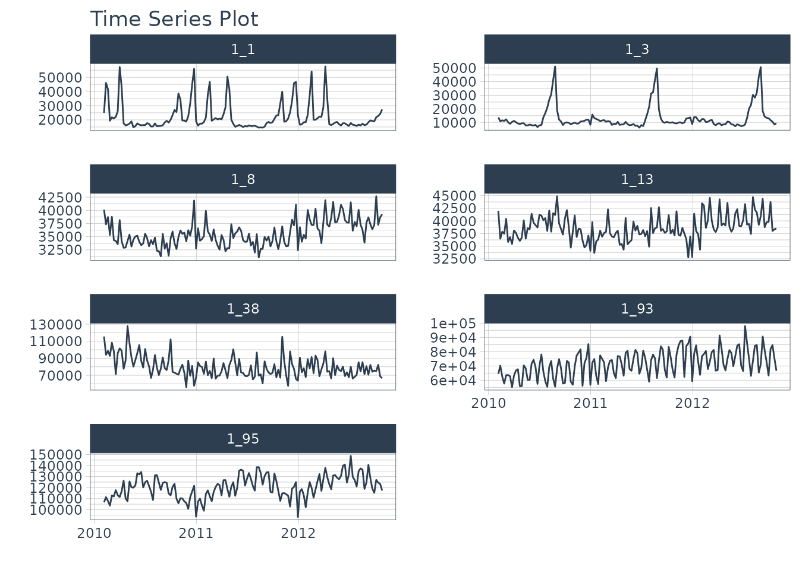
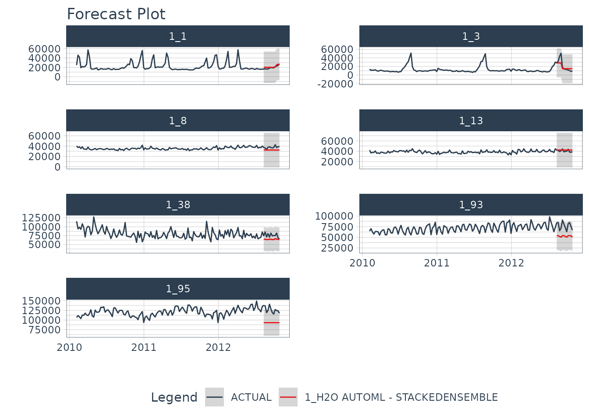
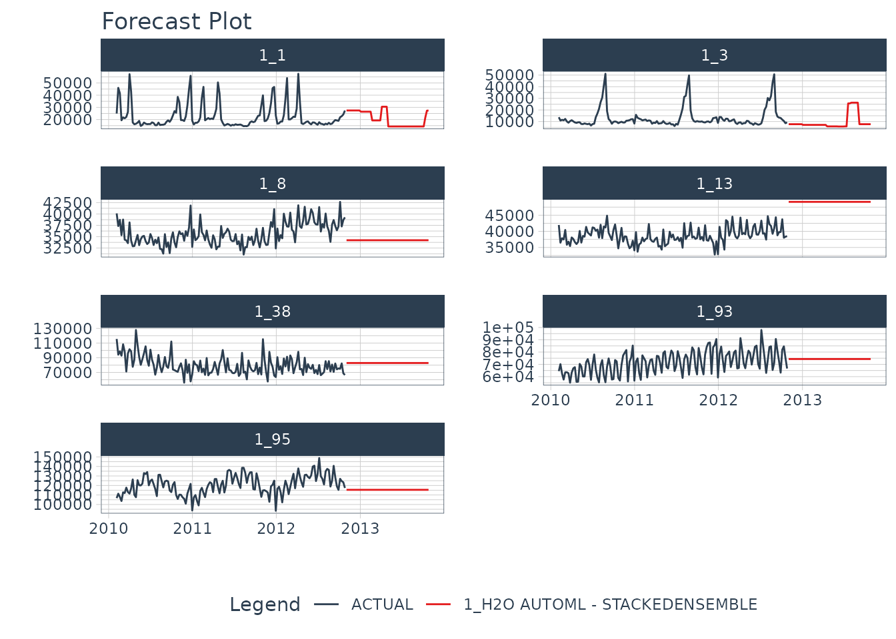

Forecasting with modeltime.h2o made easy! This short tutorial shows how you can use:
H2O AutoML for forecasting implemented via automl_reg(). This function trains and cross-validates multiple machine learning and deep learning models (XGBoost GBM, GLMs, Random Forest, GBMs…) and then trains two Stacked Ensembled models, one of all the models, and one of only the best models of each kind. Finally, the best model is selected based on a stopping metric. And we take care of all this for you!
Save & Load Models functionality to ensure the persistence of your models.
Next, we load the walmart_sales_weekly data containing 7 time series and visualize them using the timetk::plot_time_series() function.
data_tbl <- walmart_sales_weekly %>%
select(id, Date, Weekly_Sales)
data_tbl %>%
group_by(id) %>%
plot_time_series(
.date_var = Date,
.value = Weekly_Sales,
.facet_ncol = 2,
.smooth = F,
.interactive = F
)
Then, we separate the data with the initial_time_split() function and generate a training dataset and a test one.
splits <- time_series_split(data_tbl, assess = "3 month", cumulative = TRUE)
recipe_spec <- recipe(Weekly_Sales ~ ., data = training(splits)) %>%
step_timeseries_signature(Date)
train_tbl <- training(splits) %>% bake(prep(recipe_spec), .)
test_tbl <- testing(splits) %>% bake(prep(recipe_spec), .)In order to correctly use modeltime.h2o, it is necessary to connect to an H2O cluster through the h2o.init() function. You can find more information on how to set up the cluster by typing ?h2o.init or by visiting the official site.
h2o.init(
nthreads = -1,
ip = 'localhost',
port = 54321
)
#>
#> H2O is not running yet, starting it now...
#>
#> Note: In case of errors look at the following log files:
#> /tmp/RtmpX6YemH/file44b6855ee52/h2o_runner_started_from_r.out
#> /tmp/RtmpX6YemH/file44b6563da7d8/h2o_runner_started_from_r.err
#>
#>
#> Starting H2O JVM and connecting: .... Connection successful!
#>
#> R is connected to the H2O cluster:
#> H2O cluster uptime: 2 seconds 800 milliseconds
#> H2O cluster timezone: UTC
#> H2O data parsing timezone: UTC
#> H2O cluster version: 3.32.0.1
#> H2O cluster version age: 5 months and 6 days !!!
#> H2O cluster name: H2O_started_from_R_runner_nzs383
#> H2O cluster total nodes: 1
#> H2O cluster total memory: 1.51 GB
#> H2O cluster total cores: 2
#> H2O cluster allowed cores: 2
#> H2O cluster healthy: TRUE
#> H2O Connection ip: localhost
#> H2O Connection port: 54321
#> H2O Connection proxy: NA
#> H2O Internal Security: FALSE
#> H2O API Extensions: Amazon S3, XGBoost, Algos, AutoML, Core V3, TargetEncoder, Core V4
#> R Version: R version 4.0.4 (2021-02-15)Now comes the fun part! We define our model specification with the automl_reg() function and pass the arguments through the engine:
model_spec <- automl_reg(mode = 'regression') %>%
set_engine(
engine = 'h2o',
max_runtime_secs = 5,
max_runtime_secs_per_model = 3,
max_models = 3,
nfolds = 5,
exclude_algos = c("DeepLearning"),
verbosity = NULL,
seed = 786
)
model_spec
#> H2O AutoML Model Specification (regression)
#>
#> Engine-Specific Arguments:
#> max_runtime_secs = 5
#> max_runtime_secs_per_model = 3
#> max_models = 3
#> nfolds = 5
#> exclude_algos = c("DeepLearning")
#> verbosity = NULL
#> seed = 786
#>
#> Computational engine: h2oNext, let’s train the model!
model_fitted <- model_spec %>%
fit(Weekly_Sales ~ ., data = train_tbl)
#>
|
| | 0%
|
|======================================================================| 100%
#>
|
| | 0%
|
|=== | 5%
|
|================== | 25%
|
|================================ | 46%
|
|============================================== | 66%
|
|======================================================================| 100%
#>
|
| | 0%
|
|======================================================================| 100%
#> model_id mean_residual_deviance
#> 1 StackedEnsemble_AllModels_AutoML_20210314_215223 386531186
#> 2 XGBoost_2_AutoML_20210314_215223 774274696
#> 3 XGBoost_3_AutoML_20210314_215223 816368892
#> 4 XGBoost_1_AutoML_20210314_215223 1817098993
#> rmse mse mae rmsle
#> 1 19660.40 386531186 14937.70 0.4300007
#> 2 27825.79 774274696 19014.82 0.6527556
#> 3 28572.17 816368892 19963.71 0.6560465
#> 4 42627.44 1817098993 32178.74 1.1009060
#>
#> [4 rows x 6 columns]
model_fitted
#> parsnip model object
#>
#> Fit time: 13.1s
#>
#> H2O AutoML - Stackedensemble
#> --------
#> Model: Model Details:
#> ==============
#>
#> H2ORegressionModel: stackedensemble
#> Model ID: StackedEnsemble_AllModels_AutoML_20210314_215223
#> Number of Base Models: 3
#>
#> Base Models (count by algorithm type):
#>
#> xgboost
#> 3
#>
#> Metalearner:
#>
#> Metalearner algorithm: glm
#> Metalearner cross-validation fold assignment:
#> Fold assignment scheme: AUTO
#> Number of folds: 5
#> Fold column: NULL
#> Metalearner hyperparameters:
#>
#>
#> H2ORegressionMetrics: stackedensemble
#> ** Reported on training data. **
#>
#> MSE: 164435219
#> RMSE: 12823.23
#> MAE: 10518.23
#> RMSLE: 0.4178878
#> Mean Residual Deviance : 164435219
#>
#>
#>
#> H2ORegressionMetrics: stackedensemble
#> ** Reported on cross-validation data. **
#> ** 5-fold cross-validation on training data (Metrics computed for combined holdout predictions) **
#>
#> MSE: 386531186
#> RMSE: 19660.4
#> MAE: 14937.7
#> RMSLE: 0.4300007
#> Mean Residual Deviance : 386531186Finally, we predict on the test dataset:
predict(model_fitted, test_tbl)
#>
|
| | 0%
|
|======================================================================| 100%
#>
|
| | 0%
|
|======================================================================| 100%
#> # A tibble: 84 x 1
#> .pred
#> <dbl>
#> 1 27725.
#> 2 39179.
#> 3 40141.
#> 4 45689.
#> 5 73795.
#> 6 66688.
#> 7 102829.
#> 8 27725.
#> 9 39179.
#> 10 40141.
#> # … with 74 more rowsOnce we have our fitted model, we can follow the modeltime workflow from step 3:
Add fitted models to a Model Table.
Calibrate the models to a testing set.
Perform Testing Set Forecast & Accuracy Evaluation.
Refit the models to Full Dataset & Forecast Forward
First, we create the model table:
modeltime_tbl <- modeltime_table(
model_fitted
)
modeltime_tbl
#> # Modeltime Table
#> # A tibble: 1 x 3
#> .model_id .model .model_desc
#> <int> <list> <chr>
#> 1 1 <fit[+]> H2O AUTOML - STACKEDENSEMBLENext, we calibrate to the testing set and visualize the forecasts:
modeltime_tbl %>%
modeltime_calibrate(test_tbl) %>%
modeltime_forecast(
new_data = test_tbl,
actual_data = data_tbl,
keep_data = TRUE
) %>%
group_by(id) %>%
plot_modeltime_forecast(
.facet_ncol = 2,
.interactive = FALSE
)
#>
|
| | 0%
|
|======================================================================| 100%
#>
|
| | 0%
|
|======================================================================| 100%
#>
|
| | 0%
|
|======================================================================| 100%
#>
|
| | 0%
|
|======================================================================| 100%
Before using refit on our dataset, let’s prepare our data. We create data_prepared_tbl which represents the complete dataset (the union of train and test) with the variables created with the recipe named recipe_spec. Subsequently, we create the dataset future_prepared_tbl that represents the dataset with the future data to one year and the required variables.
data_prepared_tbl <- bind_rows(train_tbl, test_tbl)
future_tbl <- data_prepared_tbl %>%
group_by(id) %>%
future_frame(.length_out = "1 year") %>%
ungroup()
future_prepared_tbl <- bake(prep(recipe_spec), future_tbl)Finally, we use forecast in our future dataset and visualize the results once we had reffited.
refit_tbl <- modeltime_tbl %>%
modeltime_refit(data_prepared_tbl)
#>
|
| | 0%
|
|======================================================================| 100%
#>
|
| | 0%
|
|== | 3%
|
|================= | 24%
|
|=============================== | 44%
|
|============================================= | 64%
|
|======================================================================| 100%
#>
|
| | 0%
|
|======================================================================| 100%
#> model_id mean_residual_deviance
#> 1 StackedEnsemble_AllModels_AutoML_20210314_215241 205010876
#> 2 XGBoost_3_AutoML_20210314_215241 1432960432
#> 3 XGBoost_2_AutoML_20210314_215241 1802082476
#> 4 XGBoost_1_AutoML_20210314_215241 2261584439
#> rmse mse mae rmsle
#> 1 14318.20 205010876 9548.185 0.2207454
#> 2 37854.46 1432960432 27916.280 0.9543609
#> 3 42450.94 1802082476 32777.797 1.0998055
#> 4 47556.12 2261584439 38597.183 1.2282724
#>
#> [4 rows x 6 columns]
refit_tbl %>%
modeltime_forecast(
new_data = future_prepared_tbl,
actual_data = data_prepared_tbl,
keep_data = TRUE
) %>%
group_by(id) %>%
plot_modeltime_forecast(
.facet_ncol = 2,
.interactive = FALSE
)
#>
|
| | 0%
|
|======================================================================| 100%
#>
|
| | 0%
|
|======================================================================| 100%
We can likely do better than this if we train longer but really good for a quick example!
H2O models will need to “serialized” (a fancy word for saved to a directory that contains the recipe for recreating the models). To save the models, use save_h2o_model().
model_fitted %>%
save_h2o_model(path = "../model_fitted", overwrite = TRUE)You can reload the model into R using load_h2o_model().
model_h2o <- load_h2o_model(path = "../model_fitted/")
My Talk on High-Performance Time Series Forecasting
Time series is changing. Businesses now need 10,000+ time series forecasts every day. This is what I call a High-Performance Time Series Forecasting System (HPTSF) - Accurate, Robust, and Scalable Forecasting.
You need to provide a “High-Performance Time Series Forecasting System” (HPTSF System). High-Performance Forecasting Systems will save companies MILLIONS of dollars.
I teach how to build a HPTFS System in my High-Performance Time Series Forecasting Course. If interested in learning Scalable High-Performance Forecasting Strategies then take my course. You will learn:
Modeltime - 30+ Models (Prophet, ARIMA, XGBoost, Random Forest, & many more)GluonTS (Competition Winners)